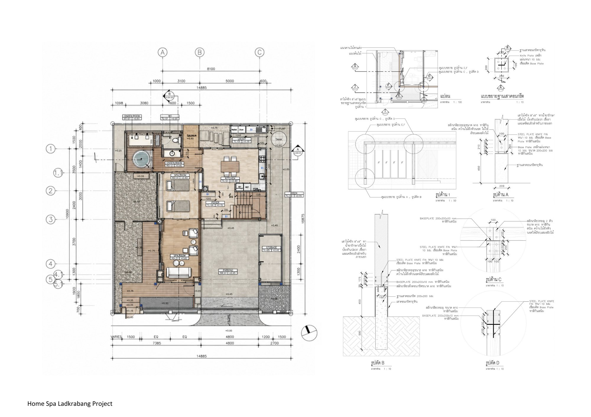
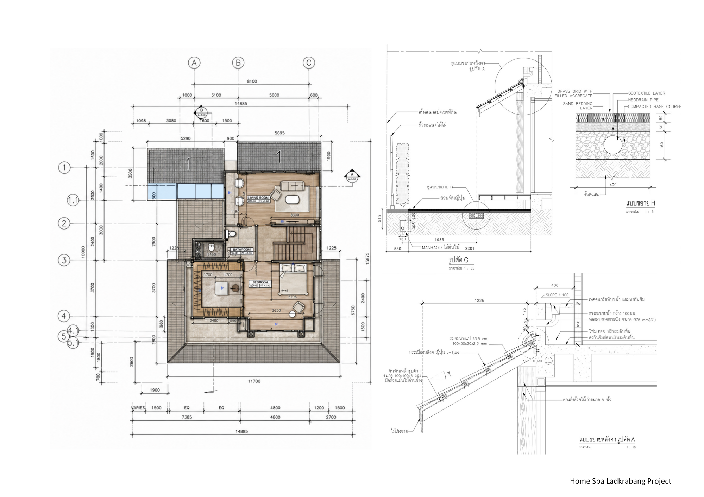

01
Credit: Creative Territories
Home Spa Ladkrabang
This project renovates a house into a private home spa while maintaining its residential function, creating a calm Japanese-inspired atmosphere through the reuse of timber from the original house to preserve memory and add value. The design introduces a gradual transition from exterior to interior through wooden walkways and semi-outdoor spaces connected to a central courtyard, allowing natural light and nature to enhance a sense of relaxation. Reclaimed wood is used in key elements such as roof extensions, walkways, and fences, placed where it can be seen and touched, combined with natural materials to create a simple, warm, and tranquil living environment.


